制限のない特別な治療を
あなただけのために
Free medical care自由診療専門にしている理由
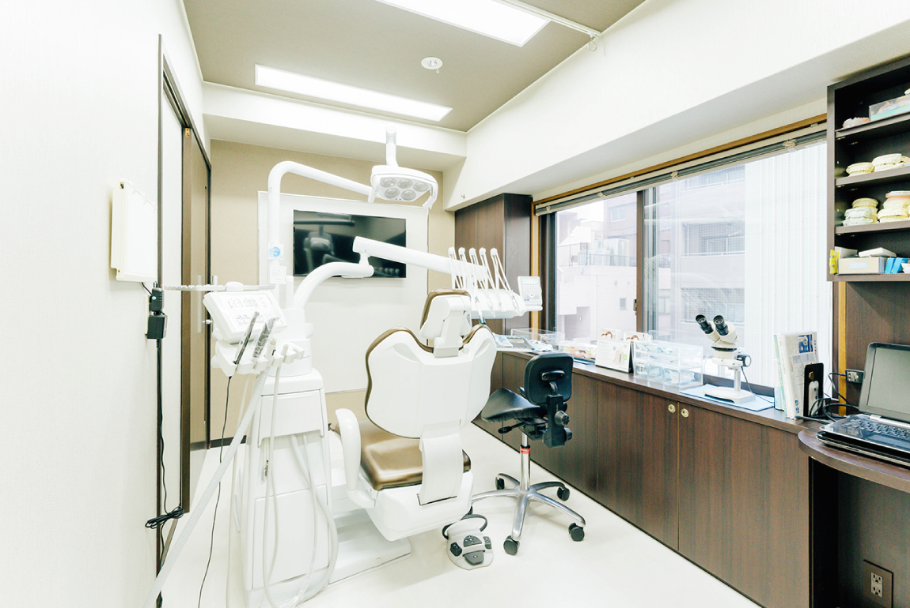
Reason
歯科診療には、保険を適用して行う「保険診療」と、保険適用外の「自由診療」の2種類があり、松戸市の歯医者「東葛デンタルオフィス」では自由診療を専門としています。
保険診療は患者様の費用負担が軽くなる反面、対応できる治療法や使用できる機材などに制限があります。制限を受け入れて最低限の治療をすれば対応は可能ですが、それは治療の本質ではなく、保険適用で適切な治療を行うのは難しいのが事実です。
当院の医師は、これまでに専門性の高い知識や技術を身に付け、研鑽を重ね、高品質で世界基準に則った治療をご提供することができます。患者様には、可能な限り制限のない患者様の症状やご要望に合わせたオーダーメイドの治療を行いたいと考えているため、当院は自由診療専門としています。
Caseここまで出来る自由診療の治療
- before 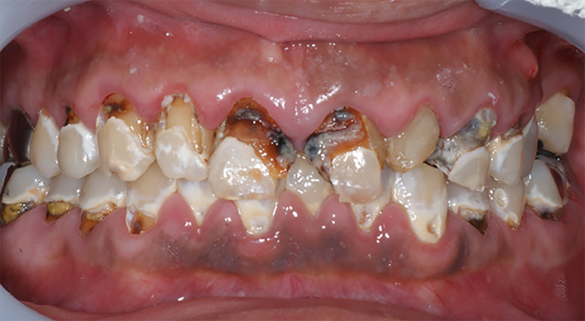
- after 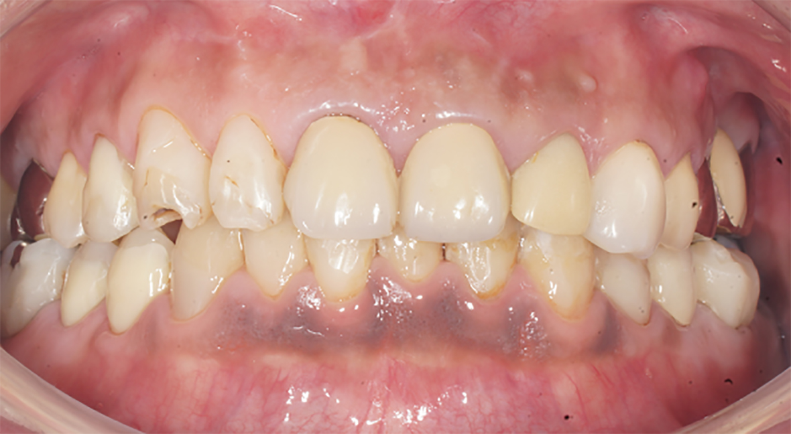
-
主訴
テキストが入ります。テキストが入ります。テキストが入ります。テキストが入ります。
-
治療内容
テキストが入ります。テキストが入ります。テキストが入ります。テキストが入ります。
-
治療期間
テキストが入ります。テキストが入ります。テキストが入ります。テキストが入ります。
-
治療費用
テキストが入ります。テキストが入ります。テキストが入ります。テキストが入ります。
-
リスク・副作用
テキストが入ります。テキストが入ります。テキストが入ります。テキストが入ります。
Doctor
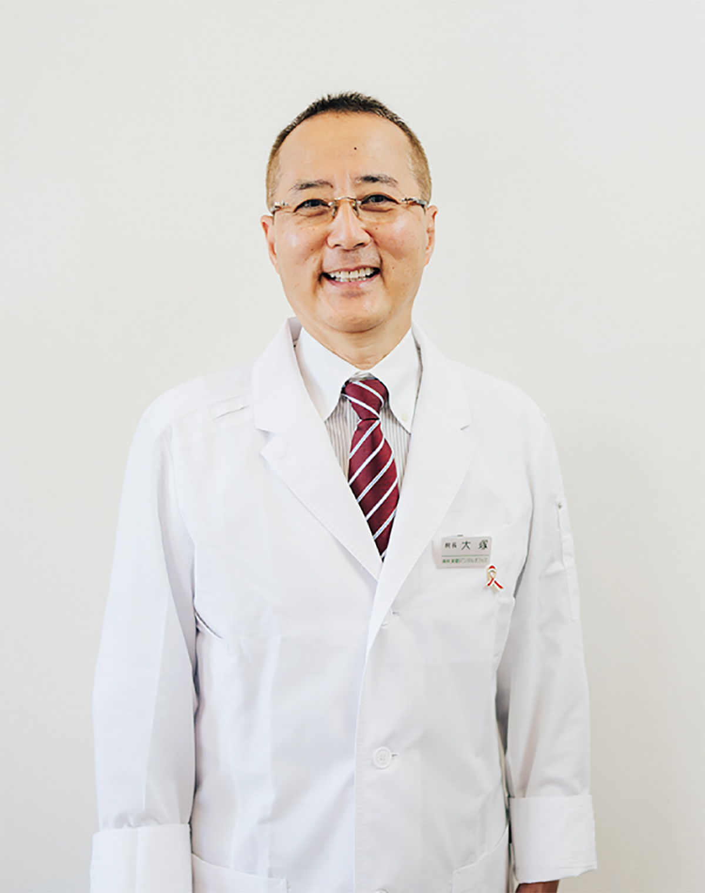
院長
大塚均
Hitoshi Otsuka
- 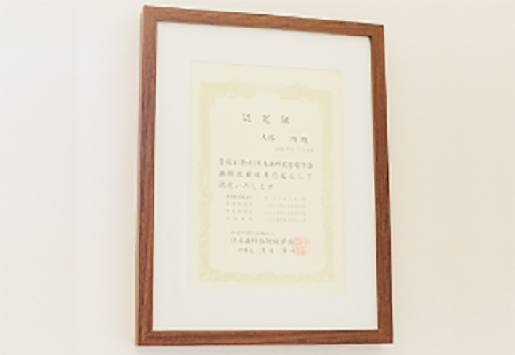
-

- 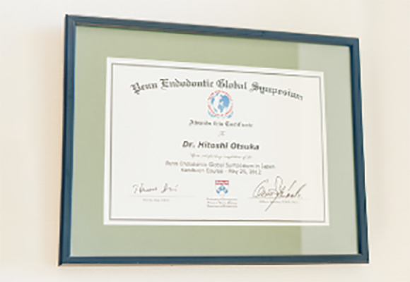
Full mouse
大切な体の一部だから
「局所」ではなく、
口腔内全体を診る「全顎治療」
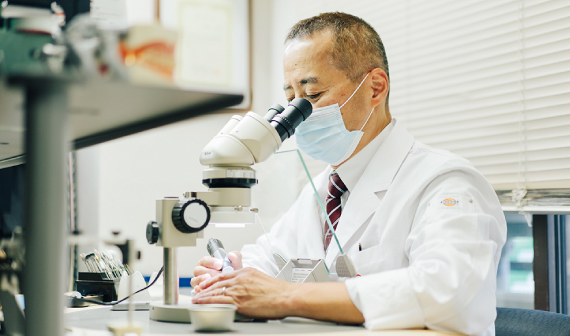
経歴
-
1986年
神奈川歯科大学優秀論文賞受賞
-
1987年
神奈川歯科大学放射線科大学院卒
歯学博士（日本歯科放射線学会会員）
神奈川歯科大学非常勤講師 -
1990年
東京都杉並区にて開業（杉並区学校歯科理事）
ライオン歯科衛生研究所と杉並区小中学校の衛生活動に従事 -
1998年
日本歯科放射線認定専門医
-
2007年
千葉県松戸市にて「東葛デンタルオフィス」開業
- 藤本研修会、各米国歯科専門医:歯内療法、歯周病､インプラント､矯正と連携
- TMD治療、慶応大学付属病院、口腔外科講師 和嶋先生と連携
- 医科歯科大学病院口腔外科、口腔外科専門医 大山先生と連携
World standard
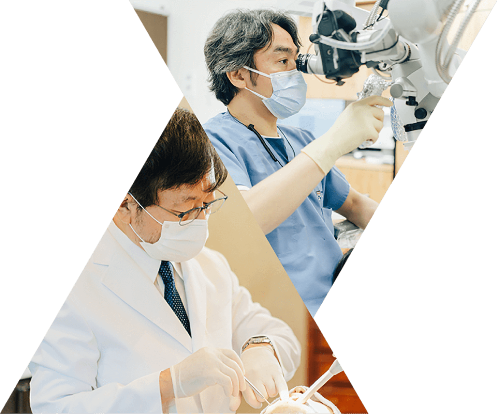
各スペシャリストによる 世界基準の治療
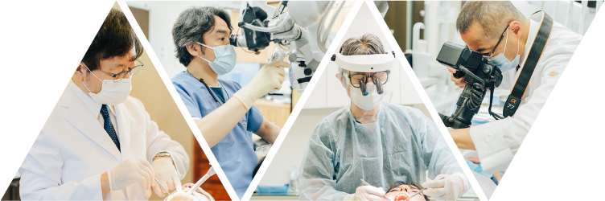
当院では各歯科治療の専門医と連携しています｡
- 銀座藤本歯科医院（インプラント、歯周病専門）米国専門医ワシントン大卒
- 銀座石井歯科医院（歯内療法専門根の治療専門）米国専門医ペンシルバニア大卒
- 表参道加治矯正歯科（矯正専門医院）米国専門医（咬合専門医）ウエストバージニア大
当院院長も日本歯科放射線認定専門医という的確な診査診断のプロフェッショナルです｡
高度な歯科治療を行うためには、専門性の高い知識と技術が求められます｡当院が中心となって治療計画を作り、専門的な治療が必要な場合は3名の専門医が当院の治療計画に沿った処置を行っています｡
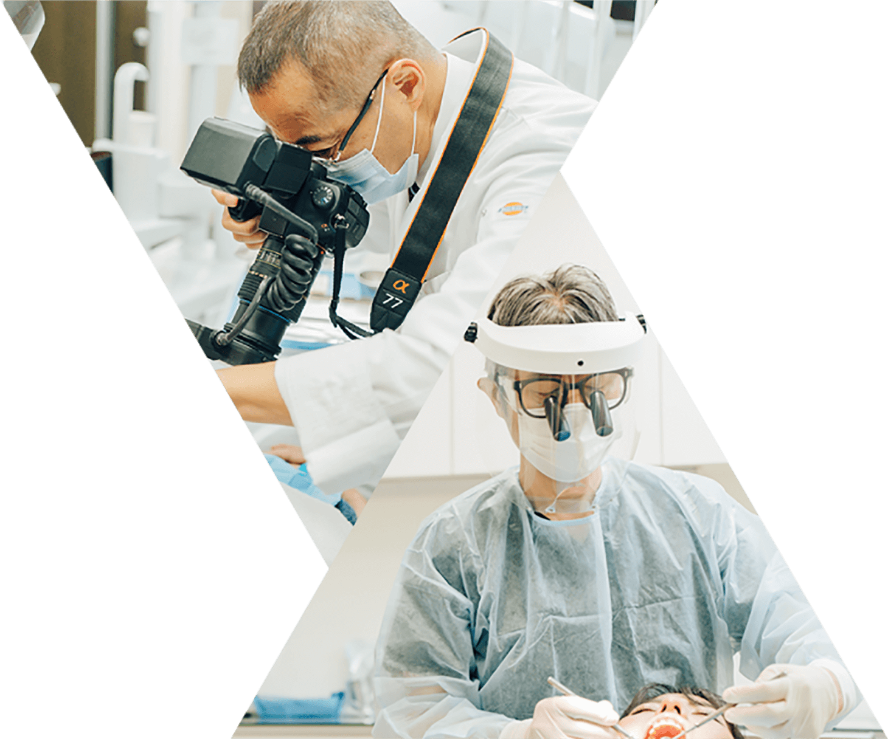
Perfect system万全の体制でお待ちしております
当院では、治療後のユニットの消毒や治療器具の洗浄、消毒、滅菌といった医療機関として重視すべき院内感染予防対策を行っています｡また、患者様にも手指の消毒や来院時の検温にご協力いただいています｡
さらに使用後の治療器具は、ヨーロッパ基準の滅菌器（クラスＢ）を使用して徹底的に滅菌しているほか、使い捨てが可能な備品を活用するなど、安全対策には力を入れています｡
- 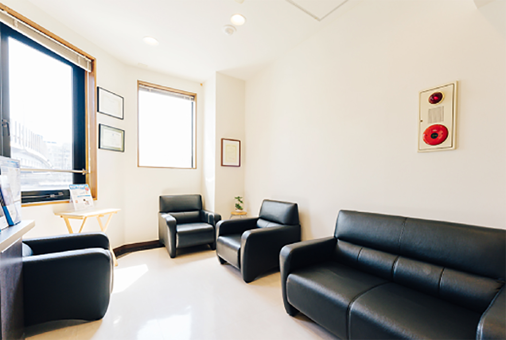
- 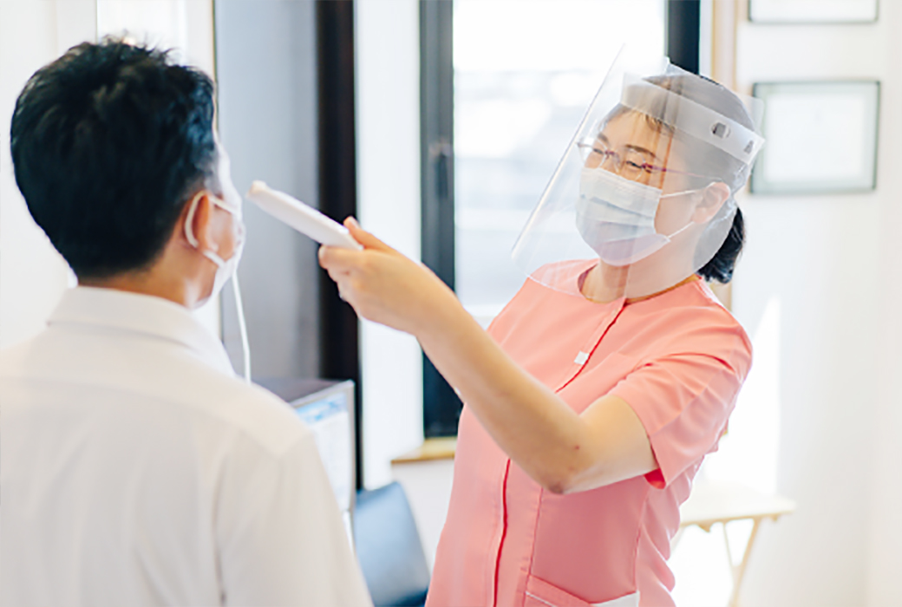